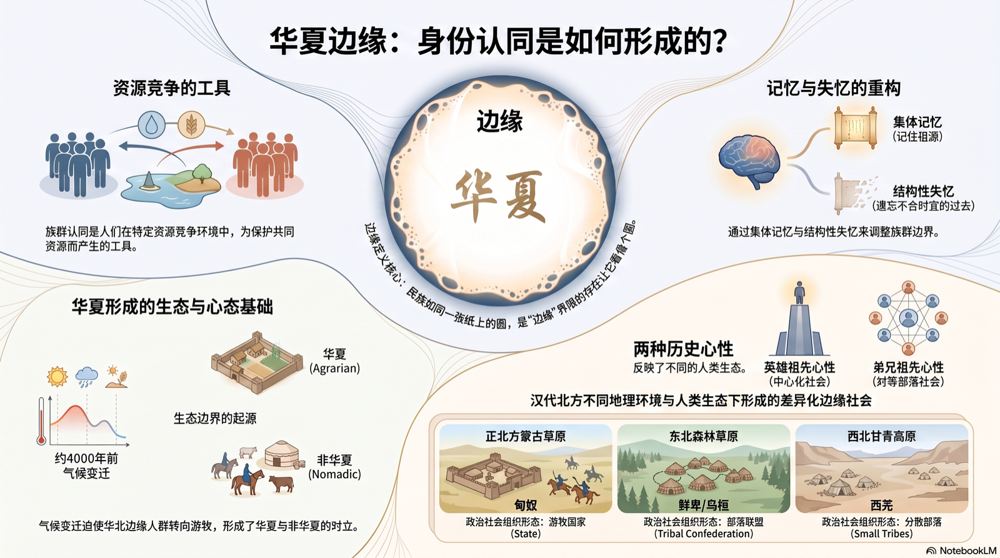
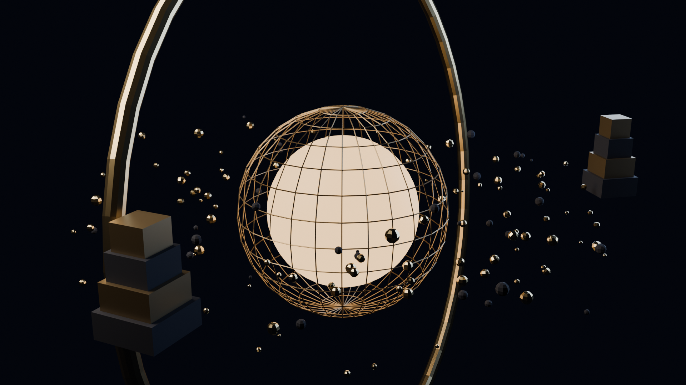
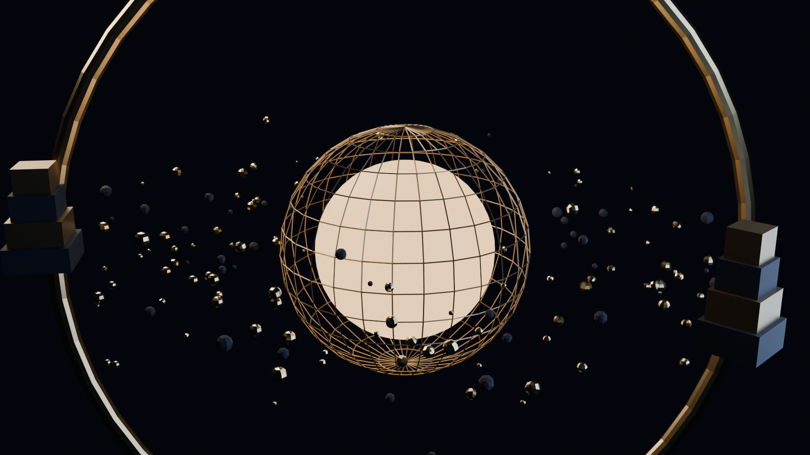
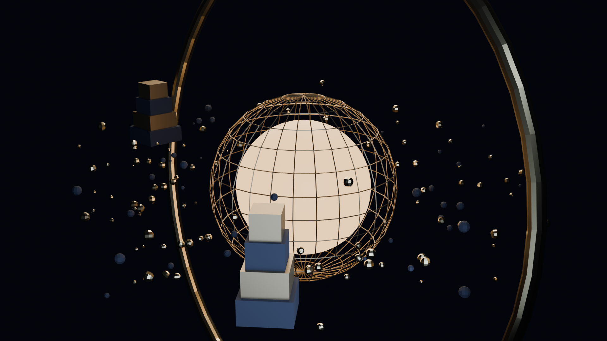

华夏边缘
THE FRONTIERS OF HUAXIA · Historical Memory and Ethnic Identity
"当我们在一张纸上画一个圆形时，
事实上是它的边缘让它看起来像个圆形。"
—— 王明珂 · 当代华语世界最具范式意义的历史人类学经典之一
事实上是它的边缘让它看起来像个圆形。"
—— 王明珂 · 当代华语世界最具范式意义的历史人类学经典之一
7,319
LIVE · 人在读
9.1
豆瓣评分
91.9%
微信读书推荐值
113
豆瓣书评
SCROLL · 向下进入边缘
贰 · MEDIA
影像里的边缘
全网经核验的讲座与解读（2026-11 数据）。
| 平台 | 内容 | 频道 | 热度 | 直达 |
|---|
全平台直达 · FIND THE EDGE EVERYWHERE
叁 · CONCEPTS
八个概念，一次边缘之旅
这条思想的谱系上，考古学教我们追问知识如何成形，边界理论把认同安放在"线"上，集体记忆说记忆活在社会的框架里——华夏不是一份固定的名单，而是一道随资源竞争、记忆与失忆不断移动的边界。读懂边缘，才读懂"什么是中国人"。
肆 · PLATES
图录 · 边缘的两种观看
两张主题图，把书中的范式之争与认同之变收进一方画面。

伍 · MIND MAP
全书思维导图
全书结构化作一张活的地图：理论框架、生态边界、历史形成、现代变迁、研究方法——悬停任意节点，追溯它通向"华夏边缘"的路径。中英双语随语言切换。
悬停节点 · 追溯谱系横向滚动查看全图双语切换 · L 键
陆 · THE MAKING
3D 造物记：从 0 到边缘
与本书同构的 3D 隐喻——发光的内核是"华夏"，青铜巨环是"边缘"，环绕的碎片是被记起与被遗忘的记忆，双碉楼矗立在羌族田野的边缘。以下工程从空场景开始逐块搭建，全程可复现。



柒 · PRAISE
他们如何谈论边缘
玖 · TRANSLATION
边缘，正被译向边缘之外
《华夏边缘》至今没有任何官方外译本。一项面向英语世界的首次全文翻译工程正在进行——让"边缘"的方法，抵达汉语之外。